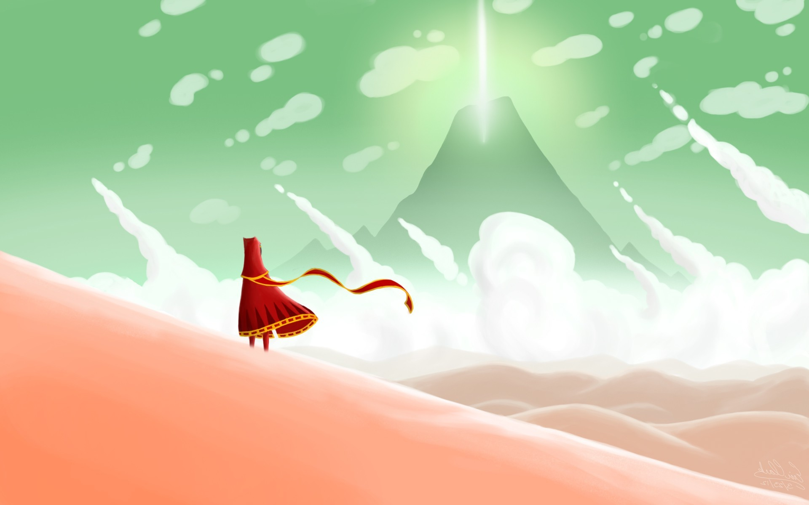

Journey is an indie adventure game co-developed by Thatgamecompany and Santa Monica Studio, published by Sony Computer Entertainment, and directed by Jenova Chen. It was released for the PlayStation 3 via PlayStation Network in March 2012 and ported to PlayStation 4 in July 2015. It was later ported to Microsoft Windows in June 2019 and iOS in August 2019.In Journey, the player controls a robed figure in a vast desert, traveling towards a mountain in the distance. Other players on the same journey can be discovered, and two players can meet and assist each other, but they cannot communicate via speech or text and cannot see each other's names until after the game's credits. The only form of communication between the two is a musical chime, which transforms dull pieces of cloth found throughout the levels into vibrant red, affecting the game world and allowing the player to progress through the levels.
BiTLayouts
In Journey, the player takes the role of a robed figure in a desert. After an introductory sequence, the player is shown the robed figure sitting in the sand, with a large mountain in the distance.[1] The path towards this mountain, the ultimate destination of the game, is subdivided into several sections traveled through linearly. The player can walk in the levels, as well as control the camera, which typically follows behind the figure, either with the analog stick or by tilting the motion-sensitive controller.[2] The player can jump with one button, or emit a wordless shout or musical note with another; the length and volume of the shout depends on how the button is pressed, and the note stays in tune with the background music.[3] These controls are presented pictorially at the beginning of the game; at no point outside of the credits and title screen are any words shown or spoken.[1]

The robed figure wears a trailing magical scarf which allows the player to briefly fly; doing so uses up the scarf's magical charge, represented visually by glowing runes on the scarf. The scarf's runes are recharged by being near floating pieces of red cloth, or a variety of other means.[4] Touching glowing symbols scattered throughout the levels lengthens the initially vestigial scarf, allowing the player to remain airborne longer. Larger strips of cloth are present in the levels and can be transformed from a stiff, dull gray to vibrant red by singing near them. Doing so may have effects on the world such as releasing bits of cloth, forming bridges, or levitating the player.